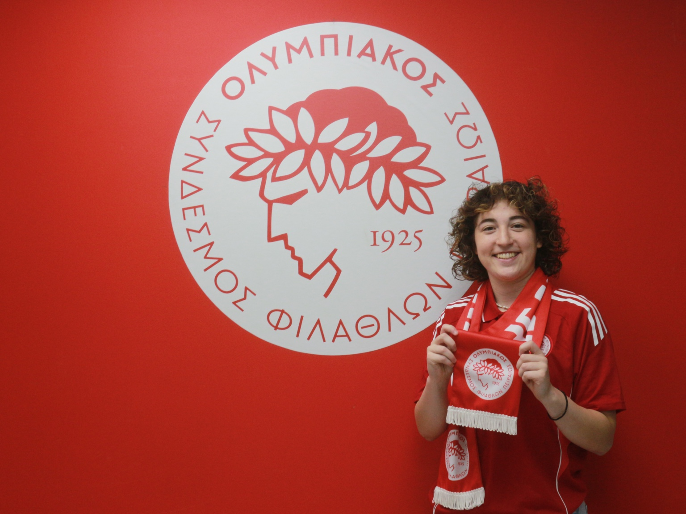

VERO / PLAYER PROFILE
ANNA-MARIA
PANAGIOTOPOULOU
GOALKEEPEROLYMPIACOS / GREECE

01 / AT A GLANCE
ROLEGoalkeeper
CURRENT CLUBOlympiacos
FOOTBALL CONTEXTGreece youth international
THE NEXT
CHAPTER.
Anna-Maria joined Olympiacos in 2026 after four seasons with AO Trikala 2011. She has also played for Greece’s U17 and U19 national teams.
Olympiacos · AO Trikala 2011 · AEK Mesolongi
VIEW PUBLIC CLUB SOURCEPROFESSIONAL ENQUIRIES
LET’S TALK
FOOTBALL.
For club or professional enquiries regarding Anna-Maria Panagiotopoulou, contact VERO directly.
CONTACT VERO